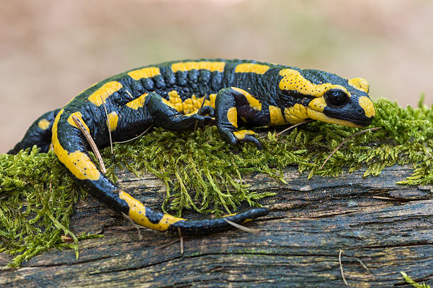

Salamanders

Salamanders are amphibians belonging to the order Urodela, characterized by their long, slender bodies, moist skin, and typically four legs. They are found in various terrestrial and aquatic habitats worldwide, ranging from forests and grasslands to streams, ponds, and caves. Here's a comprehensive overview of these fascinating and ecologically important creatures:
Description
- Physical Characteristics: Salamanders exhibit a wide range of sizes, colors, and patterns, with some species resembling lizards while others have smooth, slimy skin. They have elongated bodies, short limbs, and long tails, with variations in body shape and morphology depending on the species and habitat. Many salamanders possess unique features such as external gills, toe fringes, or brightly colored markings used for communication or defense.
- Size: Salamanders vary in size from small species measuring a few centimeters in length to large species exceeding 1 meter (3 feet) in length. The largest salamander species include the Chinese giant salamander and the Japanese giant salamander.
- Ecological Roles: Salamanders play crucial roles in ecosystems as both predators and prey. They help control invertebrate populations, serve as food for birds, mammals, and reptiles, and contribute to nutrient cycling and energy flow through their interactions with other organisms and their habitats.
Behavior
- Feeding Behavior: Salamanders are carnivorous predators that feed on a variety of invertebrates such as insects, worms, snails, and small vertebrates. They use their sticky tongues or jaws to capture prey and consume it whole or in small pieces.
- Breeding Behavior: Salamanders exhibit diverse reproductive strategies, with most species engaging in internal fertilization and laying eggs in water bodies such as ponds, streams, or wetlands. Some species undergo complex courtship rituals, including elaborate displays, vocalizations, or chemical signaling, to attract mates and ensure reproductive success.
- Habitat Use: Salamanders occupy a wide range of terrestrial and aquatic habitats, including forests, meadows, swamps, and caves. Different species have adapted to specific ecological niches and may exhibit specialized behaviors and physiological adaptations to survive in their respective habitats.
Conservation Status
- Threats: Salamanders face numerous threats to their survival, including habitat loss and fragmentation, pollution, climate change, invasive species, disease, and overexploitation for the pet trade or traditional medicine. Habitat destruction and degradation are among the most significant threats, leading to population declines and extinctions in some regions.
- Declining Populations: Many salamander species are experiencing population declines and range contractions due to human activities and environmental changes. Habitat loss, pollution, and disease outbreaks, such as chytridiomycosis, have devastated salamander populations and contributed to widespread declines and extinctions.
- Conservation Efforts: Conservation efforts for salamanders focus on habitat conservation, species protection, captive breeding and reintroduction programs, disease monitoring and management, and public education and outreach. Establishing protected areas, implementing habitat restoration projects, and enforcing regulations to prevent habitat destruction and pollution are essential for conserving salamander biodiversity.
Fun Facts
- Regenerative Abilities: Salamanders are renowned for their remarkable regenerative abilities, with some species capable of regrowing lost body parts such as limbs, tails, jaws, or even portions of their brain or spinal cord. Regeneration allows salamanders to recover from injuries, evade predators, and enhance their reproductive success.
- Diverse Reproductive Strategies: Salamanders exhibit a wide variety of reproductive strategies, including internal fertilization, external fertilization, oviparity (egg-laying), ovoviviparity (live-bearing), and paedomorphosis (retention of larval features into adulthood). These diverse reproductive strategies reflect adaptations to different environmental conditions and ecological niches.
- Indicator Species: Salamanders are considered indicator species for environmental health due to their sensitivity to environmental changes and pollutants. Declines in salamander populations can signal deteriorating water quality, habitat degradation, or ecosystem imbalances, making them valuable indicators for monitoring ecosystem health and biodiversity.
Conservation and Management
- Habitat Protection: Protecting and preserving natural habitats such as forests, wetlands, and freshwater ecosystems is essential for maintaining healthy salamander populations and preserving biodiversity. Establishing protected areas, habitat corridors, and wildlife reserves can provide safe havens for salamanders and other wildlife.
- Species Recovery: Implementing species-specific conservation measures such as habitat restoration, captive breeding and reintroduction programs, population monitoring, and disease management can help recover populations of threatened or endangered salamander species and prevent their extinction.
- Public Education: Educating the public about the ecological importance of salamanders, dispelling myths and misconceptions, and promoting coexistence and tolerance towards these animals are crucial for fostering positive attitudes and behaviors towards salamander conservation. Public outreach programs, interpretive signage, and media campaigns can raise awareness and promote appreciation for salamanders and their habitats.
Conclusion
Salamanders are captivating and ecologically important creatures that contribute to the richness and diversity of ecosystems worldwide. By recognizing the value of salamanders as integral components of biodiversity, understanding their ecological roles and conservation needs, and taking proactive measures to protect and conserve salamander populations and their habitats, we can ensure their continued survival and contribute to the preservation of global biodiversity.